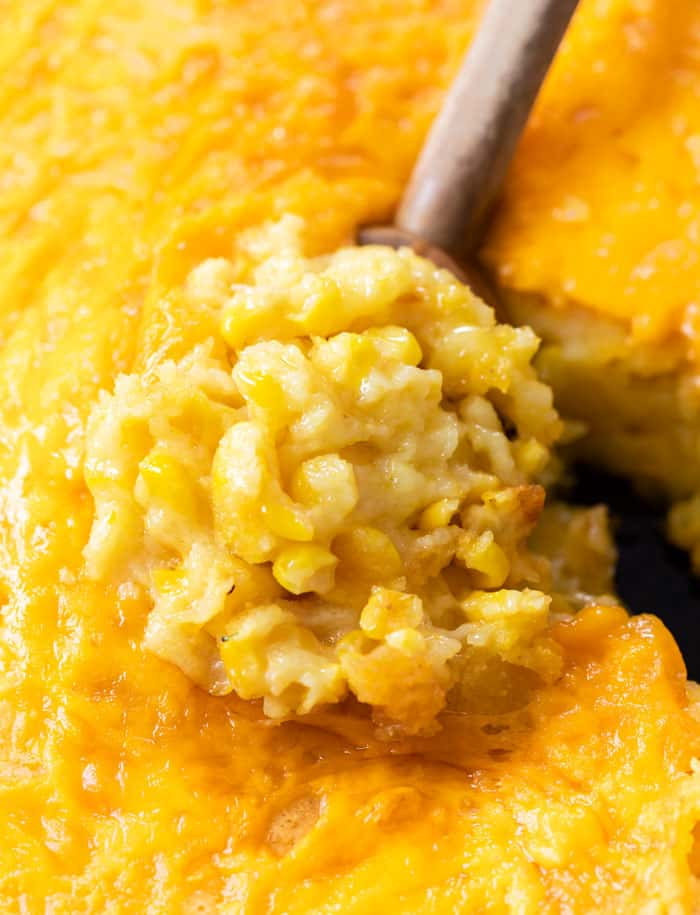

Ingredients
- 14.75 oz. creamed corn
- 15.25 oz. whole kernel sweet corn, drained
- 8.5 oz. Jiffy corn muffin mix
- 8 oz. sour cream
- 1 stick butter, melted
- I also add some sugar to mine!
Recipe (adapted from Paula Dean
- Preheat oven to 350 degrees.
- In a large bowl, combine all ingredients except for the cheddar cheese. Be sure to drain the whole kernel corn.
- Pour into a greased 9 x 13 casserole dish or 10-inch cast iron skillet.
- Bake uncovered for 45 minutes.
- Top with shredded cheddar. Bake for an additional 10-15 minutes, until the top begins to brown.
- Let stand for 5 minutes prior to serving.
Return to top
Return to main page